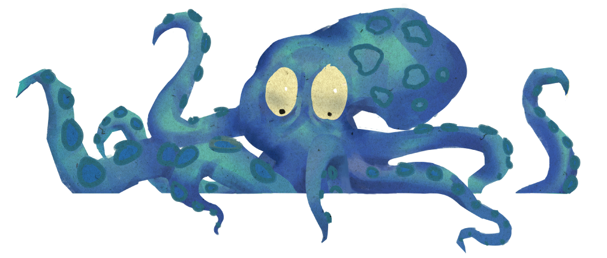

測測看！你住的地方，是總統大選章魚哥嗎？


2008
???
名
2012
???
名
2016
???
名
「章魚哥」的計算方式，是根據中選會2008年、2012年總統大選開票資料，計算全台368個鄉鎮市區中，哪些地區的開票結果，和全台開票結果的「差異距離」最小、吻合度最高。
例如：2008年總統大選，藍營候選人馬英九、蕭萬長的得票率是58.44%，綠營候選人謝長廷、蘇貞昌的得票率是41.55%。
若某「章魚市章魚鄉」的總統開票結果，藍營也是58.44%、綠營也是41.55%，那麼該「章魚市章魚鄉」的預測準確度就是百分百，和全台開票結果的「差異距離*」等於 0。
★預告強打
很遺憾，你住的地方不是章魚哥嗎？
那揪~竟哪些地方才是正港選戰章魚哥？他們有什麼共通點，可以如此神準?2016大選開票結果，會讓哪些「原章魚哥」凸槌失準，又有哪些成為新秀章魚哥？
1/17 即將推出「選戰章魚哥-2016版」將公布：
● 超準章魚哥vs不準反指標 市鎮排行榜 TOP 10
除此之外，根據三次選舉數據，還會深入解析：
● 這隻章魚哥 到底有什麼特別？
●「章魚群」會遷徙？甘有什麼道理？
請各位觀眾記得準時收看！
* 計算方式：根據中選會2008年、2012年總統大選開票資料，計算全台368個鄉鎮市區中，哪些地區的各候選人得票率，和全台個候選人得票率的「差異距離」最小、預測準確度最高。
*「差異距離」公式：取平方開根號=√ (全國A候選人得票率-該鄉鎮市區A得票率)^2 + (全國B候選人得票率-該鄉鎮市區B得票率)^2 + (全國B候選人得票率-該鄉鎮市區B得票率)^2